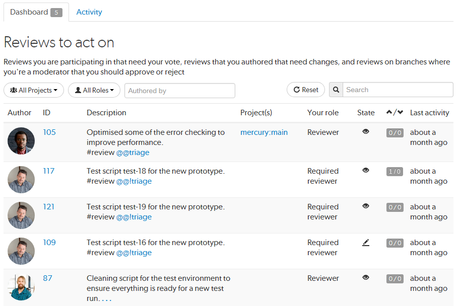

Your dashboard is available on the Home page of Swarm and displays a list of reviews that you may need to act on.
Note
Since it is tied to the logged in user, the dashboard is only populated if you are logged in.
Click the Home link in the main toolbar.
If the dashboard is not displayed, click the Dashboard tab.

By default all projects with reviews you need to act on are displayed.
To filter the reviews displayed by project, select My Projects, or a specific project from the All Projects drop down. The All Projects drop down will only show projects for which there are reviews in your dashboard.
By default all reviews you need to act on are displayed.
To filter by your role in a review, select Author, Reviewer, Required reviewer, or Moderator from the All Roles drop down. The All Roles drop down will only show roles for which there are reviews in your dashboard.
Tip
For more information on the dashboard page, see Dashboard.
Click on a review ID number to display the code review.